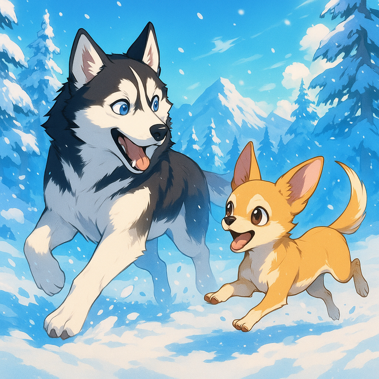

Super Husky Facts
- Huskies are like furry energy drinks - always on the go!
- They're masters of disguise and escape, like tiny Houdinis of the dog world.
- Warning: a bored Husky equals a creative interior decorator (of your stuff!).
- These dudes are seriously strong and fast, built for chilly adventures.
- They rock a cool, wolf-like look that's totally tubular.
- Check out those eyes! Often bright blue, or even one of each color - wild!
- Even though they're work dogs, they're total party animals and love to play.

Chihuahua Power Facts
- Chihuahuas: Tiny package, maximum attitude and loyalty!
- These pint-sized pups are usually under 6 pounds, but they act like giants.
- Don't let the size fool you, they've got personality for days!
- They often stick to one person like glue - your personal tiny bodyguard.
- Chis are surprisingly tough and often live a long, happy life.
- Apple head or deer head? Both styles are awesome!
- They might shiver, but that's just their body's way of staying warm or showing excitement!